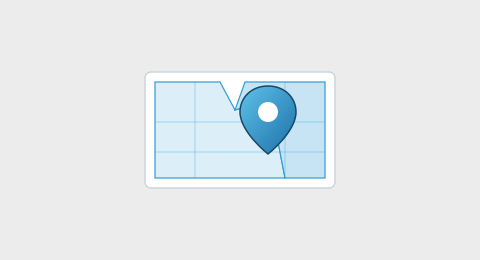
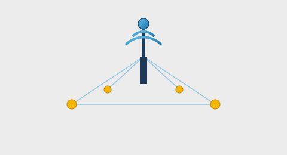
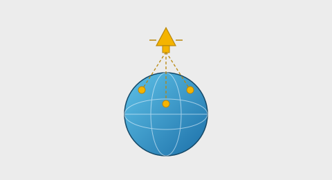
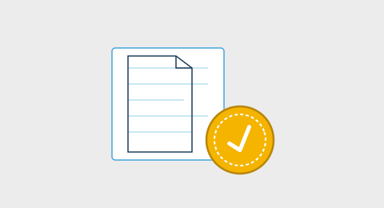
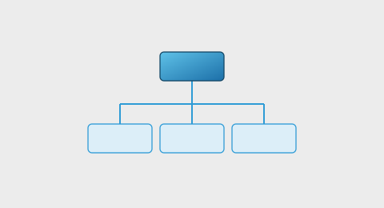
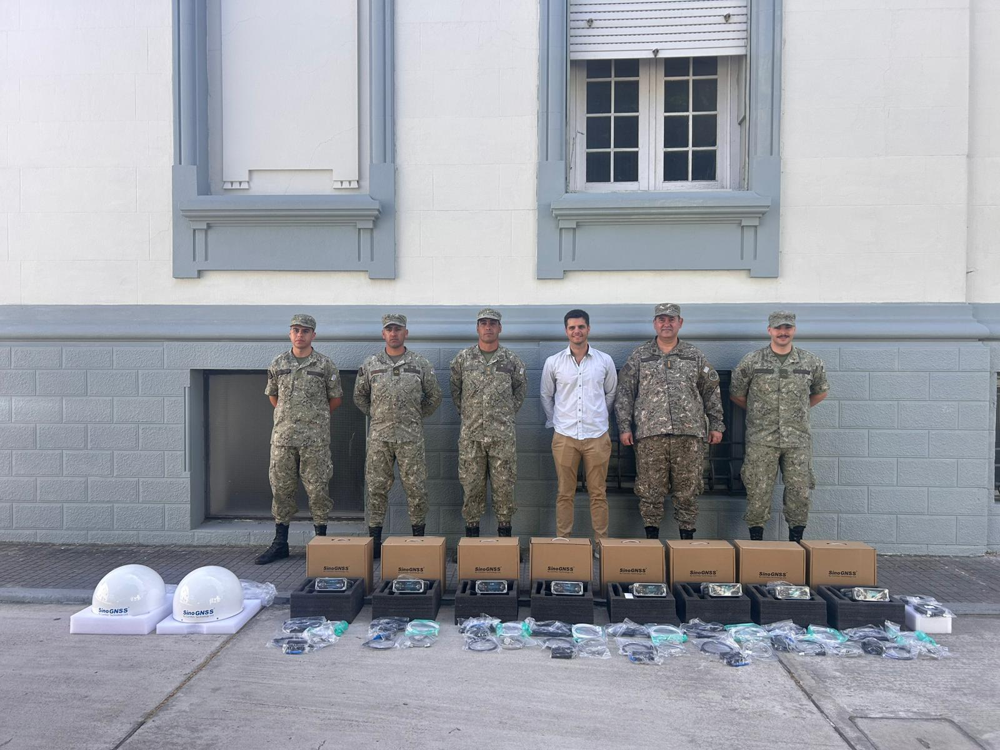
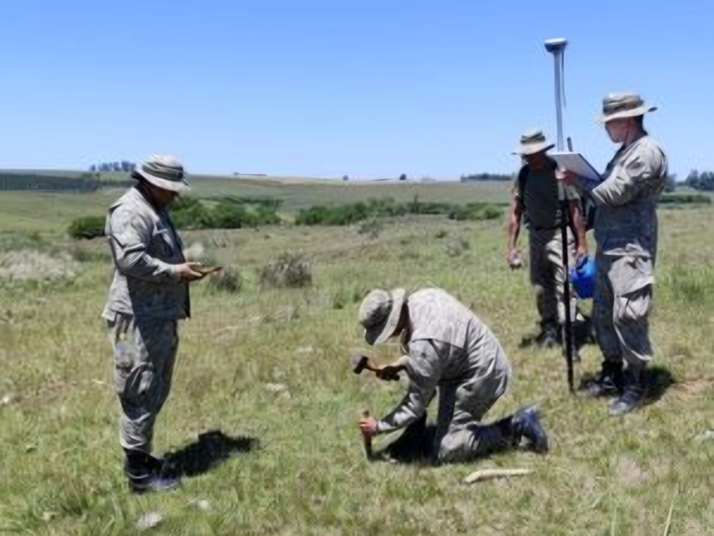
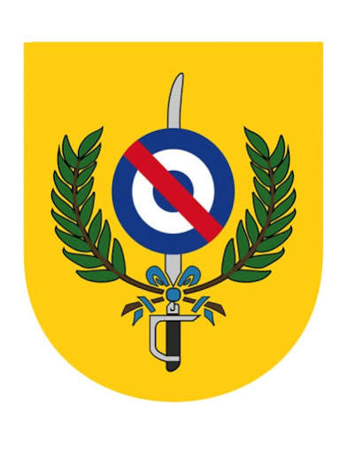
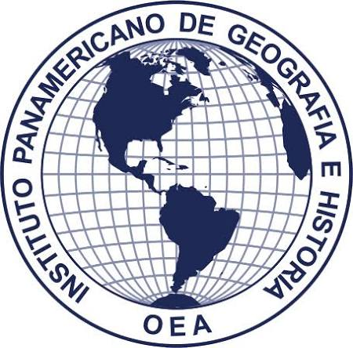

Instituto Geográfico Militar

Un portal geográfico con visores, geoservicios y cobertura nacional vectorial (WFS) del territorio uruguayo.
Entrar
La Red Geodésica Nacional Activa (REGNA-ROU) ofrece mediciones de precisión mediante estaciones de referencia distribuidas en todo el país.
Entrar
El Instituto Geográfico Militar, a través de la División Geodesia, se encarga de establecer la referencia geodésica oficial del país.
EntrarCartografía oficial, mapas antiguos y publicaciones del Instituto Geográfico Militar del Uruguay disponibles para su adquisición.
Entrar
Trámite de visación de planos y documentos cartográficos ante el Instituto Geográfico Militar.
Entrar
La estructura administrativa del Instituto Geográfico Militar se encuentra conformada por la Dirección, Subdirección y las distintas Divisiones.
EntrarConsulta el acervo histórico cartográfico del IGM, incluyendo mapas antiguos digitalizados de todo el territorio nacional.
EntrarCursos y capacitaciones en geomática, geodesia y cartografía dictados por el Instituto Geográfico Militar.
EntrarInstituto Geográfico Militar
Galería de actividades publicadas por nuestro Instituto

Adquisición de nuevos Receptores GNSS para la REGNA-ROU

Relevamiento Geodésico - Topográfico en Pirarajá
Jornadas del IPGH 2025
Visita delegación NGA
Instituto Geográfico Militar
La Red Geodésica Nacional Activa del Uruguay (REGNA-ROU) brinda mediciones de precisión mediante un servicio de posicionamiento en tiempo real, sin costo, previo registro.
Ver más »Un portal geográfico con visores interactivos, geoservicios WFS y cobertura vectorial nacional para consulta pública.
Ver más »Cursos de geomática, geodesia y cartografía dictados por especialistas del Instituto Geográfico Militar.
Ver más »Instituto Geográfico Militar

Ejército Nacional
IPGHInstituto Geográfico Militar
| Informaciones | Dirección / Fonos / Contactos |
|---|---|
| Dirección | Avenida 8 de Octubre 3255, Montevideo |
| Central | (+598) 2487 1810 |
| Comercial | comercial@igm.gub.uy |
| Horario de Atención | |
|---|---|
| Comercial | Lunes a viernes 8:00 a 13:00 hrs. |
| Mapoteca | Lunes a viernes 9:00 a 12:00 hrs. |